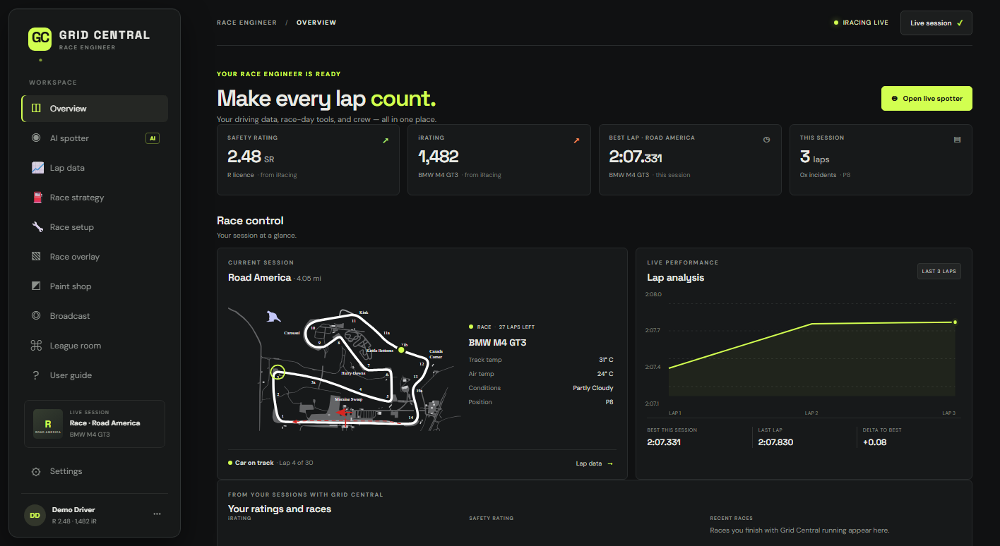
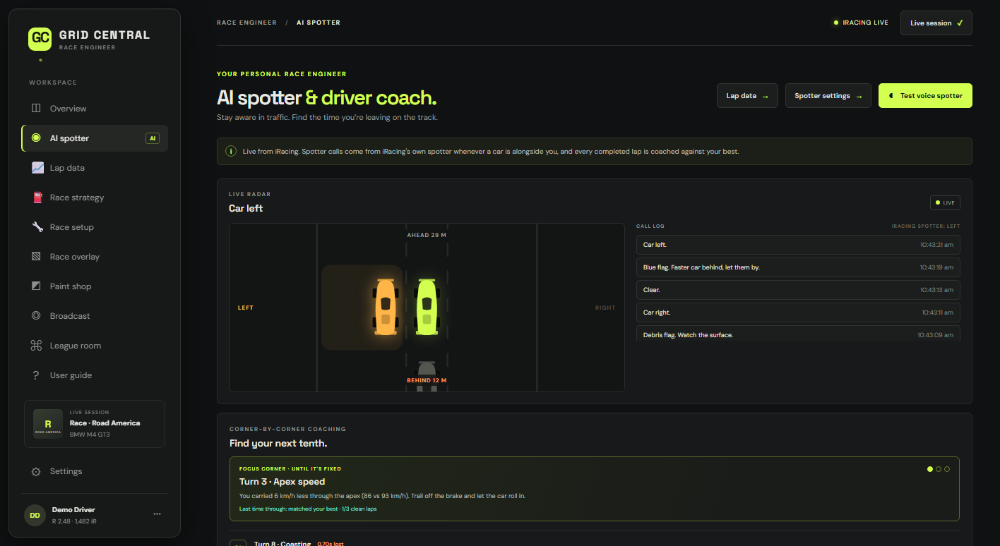
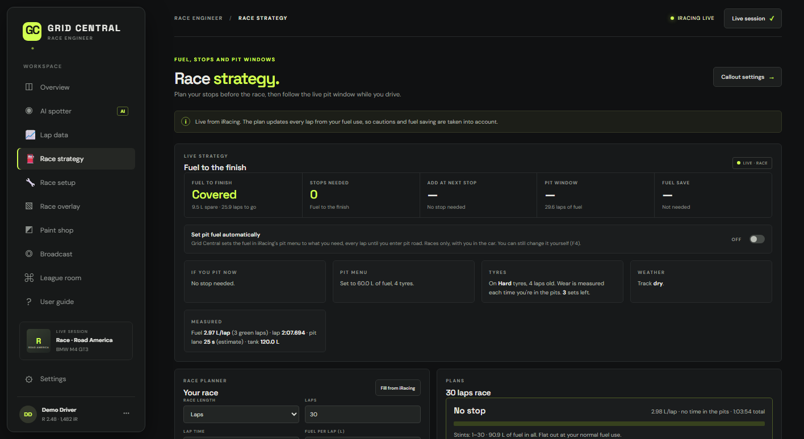
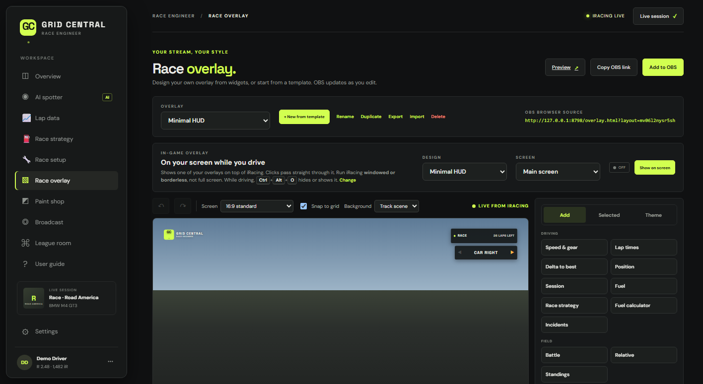
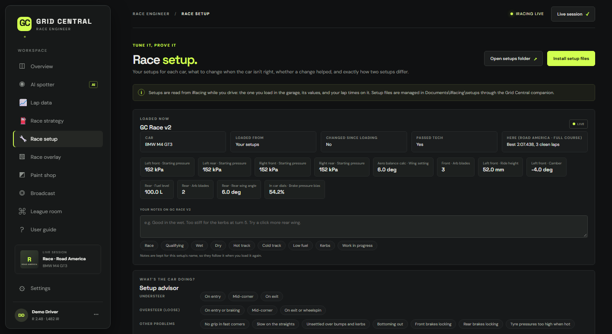

Your race engineer,
in your ear.
Grid Central calls the cars around you, coaches you corner by corner, works out your fuel and pit stops, and answers when you ask. It runs on your PC alongside iRacing.
Closed beta now · English, Español, Deutsch

Everything a race engineer does, on one screen.
Live data comes straight from iRacing on your PC. Nothing about your driving leaves your computer unless you share it.
Voice spotter and engineer
Car left, car right, clear. Flags, gaps, fuel, damage, weather and pit calls, read out in a natural voice and never talking over each other.
Ask, and it answers
Hold a wheel button and ask "how's the fuel?" or "gap behind?", or tell it "four new tyres, fill it up". Recognised offline, in English, Spanish or German.
Find your next tenth
Every lap is compared with your best, corner by corner: braking, apex speed, exits. One focus corner at a time until it's fixed.
Fuel to the finish
Live fuel per lap, laps to go, the pit window and what to add. It can even set the fuel in iRacing's pit menu for you.
Setup help that makes sense
Say "it's understeering" or "it bottoms out" and get the garage change to try. Compare setups by the laps you drove on them.
Overlays for stream and screen
Design your own from widgets, or start from a template. Add it to OBS with one link, or show it over iRacing while you drive.
Paint your car
Load the car's template, recolour panels, add numbers and logos, then install the paint straight into iRacing.
Phone pit wall and team hub
Live timing and strategy on your phone, a team page for your crew anywhere, driver swaps, and Discord for your league.
Built for race day.
Captured from a race in Grid Central's built-in demo.




One subscription, everything included.
Grid Central is in a closed beta. Subscriptions open at launch, with a free trial.
Monthly
- Every feature, every update
- Free trial to start
- Cancel any time
Yearly
- Everything in monthly
- Lower price than paying monthly
- Beta testers get a thank-you at launch
Drive it before launch.
Testers get a personal beta code, the Setup download, and updates as they're released. Tell us what you race and we'll send you a code.
What you need
- Windows 10 or 11, 64-bit
- iRacing
- Microsoft Edge (built into Windows) for Grid Central's window and natural voices
- A microphone and a free wheel button for Talkback (optional)
- Internet once to download Talkback's speech model (about 40 MB)
Good to know.
Does Grid Central work with iRacing's own spotter?
Yes. Grid Central uses iRacing's live data on your PC, including when a car is alongside you, and adds its own engineer, coaching and strategy calls on top. You can turn any call type off.
Does it send my data anywhere?
No. Laps, setups and settings stay on your PC. Only the things you choose to share leave it, such as the team hub, the phone pit wall or Discord posts.
How does it get data from iRacing?
A small companion program reads iRacing's live telemetry on your PC, the same way other sim racing tools do. It only reads; it never changes anything in iRacing except the pit menu, and only when you ask it to.
Windows says it doesn't recognise the Setup program.
The beta isn't code-signed yet. Choose More info, then Run anyway. Signed releases are coming before launch.
Which languages does it speak?
English, Spanish and German: the app, your engineer's voice, and Talkback.